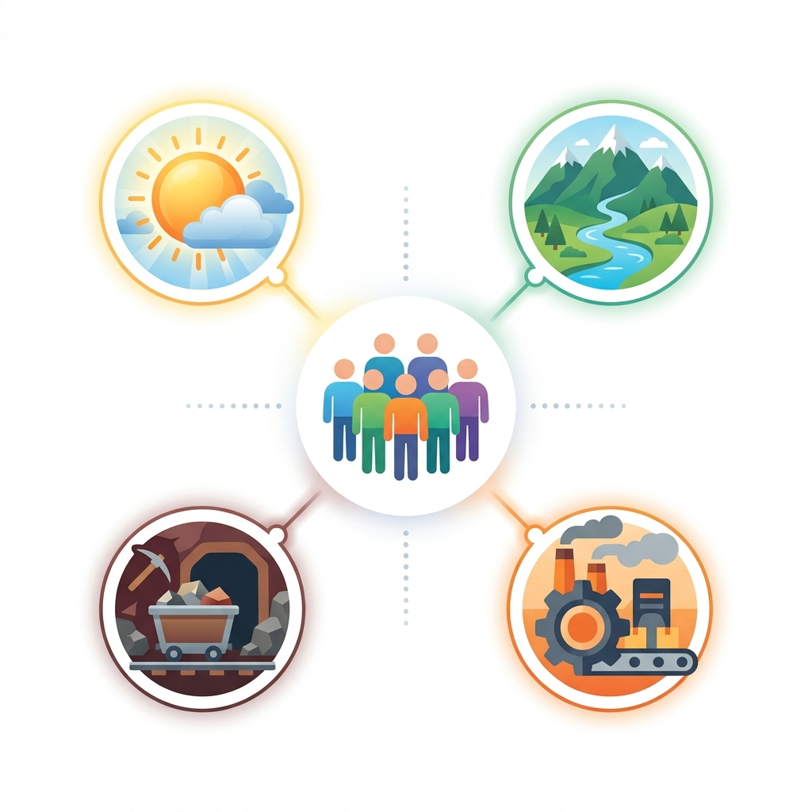
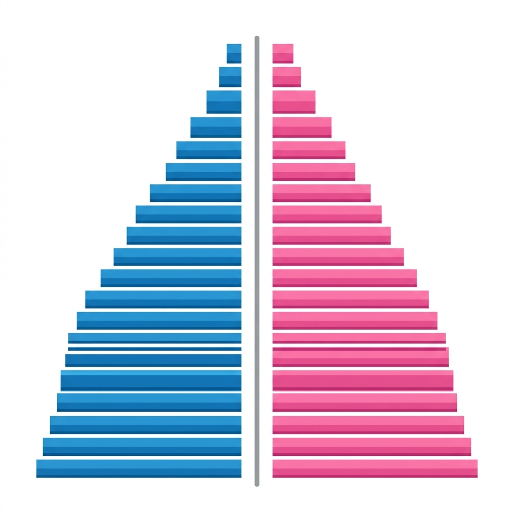

The resources that exist in a country are gifts of nature. Human beings are considered an important and integral part of the ecosystem. Because they are endowed with intelligence, thinking, and creative skills, human beings are the biggest and the most valuable resource on Earth.
To fully tap this potential, it is imperative that the government provides basic education, better healthcare, and employment opportunities to every individual. It is rightly said that 'educating one woman means educating the whole family'.
Human Development: The UNDP (United Nations Development Programme) in 1990 defined Human Development as the process of enlarging people's choices. In India, there is a separate department called HRD (Human Resource Development) which looks after the education of the people.
Distribution of population means how human beings are spread over the earth's surface. The distribution is highly uneven. Population is mostly concentrated in areas rich in natural resources, like fertile river valley basins and industrially developed regions. Conversely, population is sparse in polar regions, hot deserts, and thickly forested areas.
At present, the world's population has crossed a 7 billion mark. India and China alone account for 37% of the world's population. Continent-wise distribution is roughly: Asia (60%), Africa (16%), America (13.5%), Europe (10%), and Oceania (0.5%).
Density of Population: Measured as the number of persons living in per square kilometre. If we exclude Antarctica, the average world population density is more than 50 persons per sq. km. In highly dense areas like Singapore, it is 7263 persons per sq. km.

India is the 7th largest country in the world in terms of geographical size, but it ranks 2nd in terms of population. The total population of India was 1.21 billion (in 2011), which is bigger than the combined population of USA, Indonesia, Brazil, Pakistan, and Bangladesh.
Nearly half of the population lives in just five states: Uttar Pradesh, Maharashtra, Bihar, West Bengal, and Madhya Pradesh. On the basis of density, India is grouped into:
People settle in areas where food, water, and land are easily available. These factors are grouped into physical and economic factors.

Population is always in a state of flux. The net change in population between two fixed periods of time expressed in percentage is called the growth rate of population.
Population Explosion: The world population grew from 1.5 billion in 1900 to 7.0 billion in 2011. Similarly, India's population went from about 361 million in 1951 to over 1.21 billion in 2011, adding over 700 million people in just 60 years. At this rate, India's population could double in the next 36 years.
The composition of human resources includes attributes like age structure, sex-ratio, literacy rate, working/non-working population, etc.
Population is generally categorized into three broad age groups:
It is the ratio between the number of females and males in a population, expressed as the number of females per thousand males. While European countries generally have a favourable sex-ratio, India's sex-ratio was 943 in 2011 (declining from 972 in 1901).
Reasons for Declining Sex-Ratio in India:
Note: Kerala has the highest sex-ratio in India (1084) and Haryana has the lowest (879).
Literacy rate is the percentage of people who can read and write. It is an important indicator of the socio-economic development of a nation.
Population is an asset, not a liability. A population becomes human capital when investment is made in education, health, and skill development. Investment in human capital yields the highest return.
